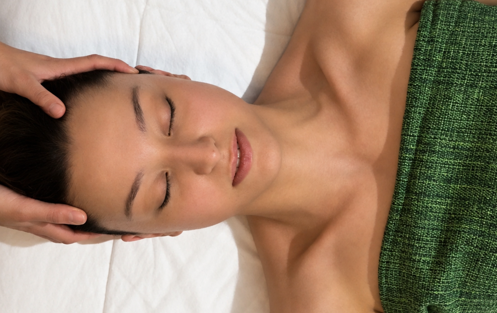
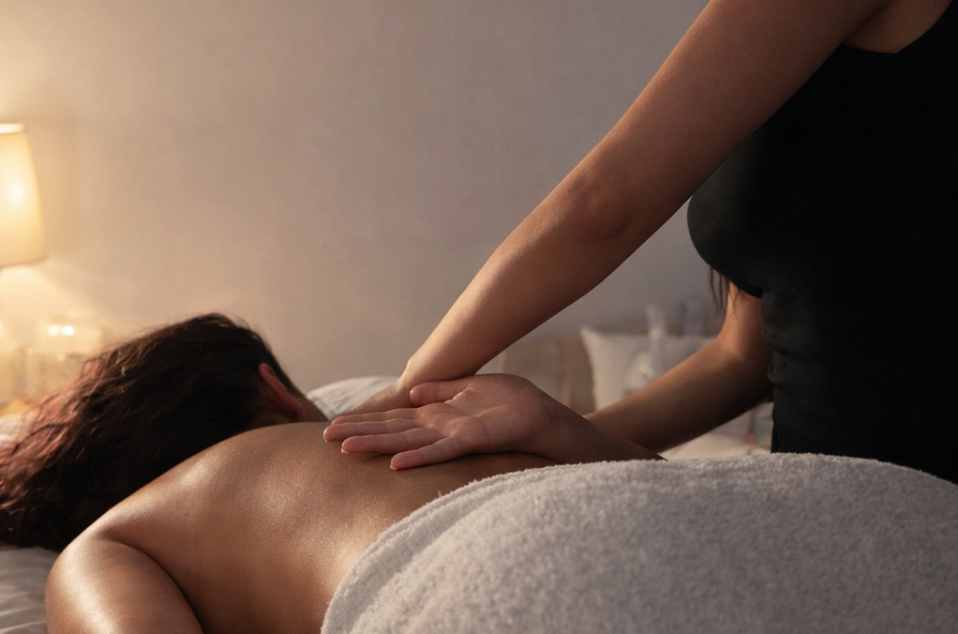

Seu corpo não precisa de mais cobrança, precisa de cuidado.
Descubra um momento feito para você desacelerar, aliviar a sensação de inchaço e voltar a se sentir bem no próprio corpo.
Descubra um momento feito para você desacelerar, aliviar a sensação de inchaço e voltar a se sentir bem no próprio corpo.
A rotina passa rápido. Trabalho, casa, filhos, responsabilidades… e, muitas vezes, você acaba ficando por último.
Até que começam a aparecer aquela sensação de corpo pesado, inchaço, desconforto, tensão e a vontade de olhar no espelho e voltar a se sentir bem consigo mesma.
Esculpe Detox
Esculpe Detox
Esculpe Detox
Esculpe Detox


Conheça o Método
Um protocolo corporal realizado por
profissional certificada, que une técnicas
de massoterapia para proporcionar
cuidado estético e bem-estar.
Pensado para mulheres que desejam sentir
o corpo mais leve, cuidar do contorno
corporal e diminuir a sensação de inchaço.
 Sou prova disso! Depois do Detox, eliminei até as fezes velhas. Obrigada, Giuli, por não desistir de mim.
Sou prova disso! Depois do Detox, eliminei até as fezes velhas. Obrigada, Giuli, por não desistir de mim.
- Cliente via Instagram
Oie!!! Menina, amandoooooo. Nada de dor e o intestino tá uma beleza. Ir no banheiro todo dia para mim é luxo kkkkk
- Cliente via Whatsapp
Cada corpo tem suas próprias necessidades, e o atendimento não
precisa ser igual para todas.
Antes de começar, busco entender como você está se sentindo, o
que tem incomodado e quais são suas expectativas para aquele
momento.
A partir disso, o atendimento é conduzido de maneira
personalizada, respeitando seu corpo, seus limites e o que você
busca.

Casada com meu primeiro namorado, mãe do Levi e karateca, construi minha primeira carreira na área administrativa depois de me formar em Secretariado Executivo.
Com o nascimento do meu filho, decidi mudar de direção para acompanhar meu crescimento mais de perto. Foi nesse período que encontrei na massoterapia integrativa uma nova forma de cuidar.
Vieram os estudos, as especializações e os primeiros atendimentos.
Hoje, transformo esse conhecimento em cuidado para outras mulheres que desejam se sentir mais leves, confiantes e bem consigo mesmas.
Profissional certificada no Método Esculpe Detox e especializada em massoterapia integrativa.
Outros Serviços
Outros Serviços
Outros Serviços
Outros Serviços
Outros Serviços
Escolha o cuidado que seu corpo está pedindo hoje.
Conte o que você busca, tire suas dúvidas e descubra qual
atendimento faz mais sentido para você.
Drenagem Linfática
Uma massagem suave e
relaxante que auxilia a
circulação linfática e
ajuda a diminuir a
sensação de retenção de
líquidos e inchaço.
Ideal para: pernas
pesadas, sensação de
inchaço e busca por mais
leveza no dia a dia.

Massagem Facial
Um momento de cuidado
para relaxar os músculos
da face e proporcionar
uma aparência mais
descansada e revitalizada.
Ideal para: quem busca
relaxamento facial, aparência
revitalizada e alívio das
tensões do dia a dia.

Momento dos Sonhos
Massagem corporal +
facial para uma
experiência completa de
relaxamento da cabeça
aos pés.
Ideal para: tensão, períodos
estressantes ou
simplesmente quando
você sente que merece
uma pausa.

Talvez o que esteja faltando na sua rotina sejam
alguns minutos só para você.

Horário

Localização